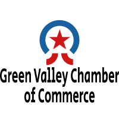

Site Purpose
The purpose of this website is to inform Green Valley community members about the small businesses in their area, as well as help those businesses to through activities, fund-raising and charity events.
Additionally, we seek to edcuate small business owners in the best ways they can conduct their businesses in ways that support the community in which the work. We also want to provide an avenue of communication between customers and those local entreprenuers that they do business with day to day.
The greenvalleychamber.org website will be used to inform, to educate, to liase, and to coordinate small business in the Green Valley area.
Site Name
www.greenvalleychamber.orgOur site is going to be called greenvalleychamber.org. As this name clearly implies, this site will be a conduit for cusomters and small business owners to talk to one another about community affairs, activities and charity events.
Our Logo
This logo symbolizes how small business owners and the local community can come together to support each other through the Green Valley Chamber of Commerce.